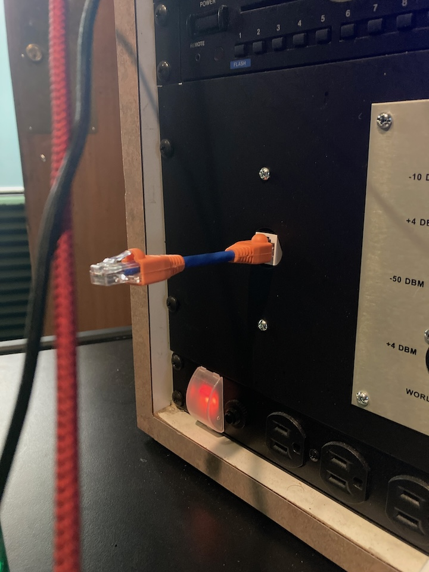
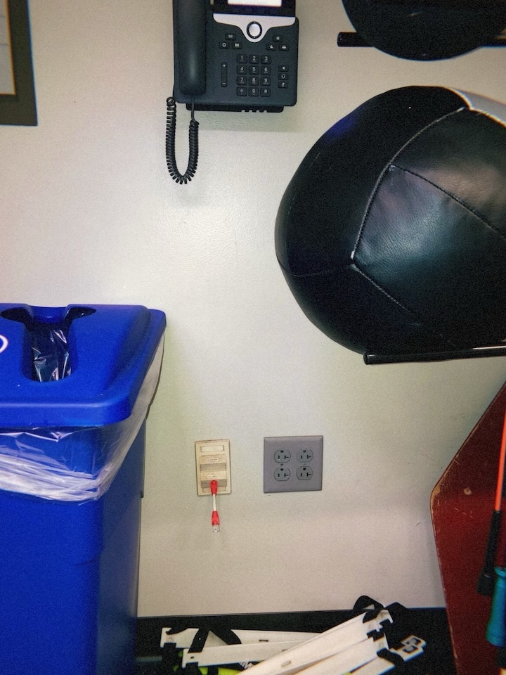
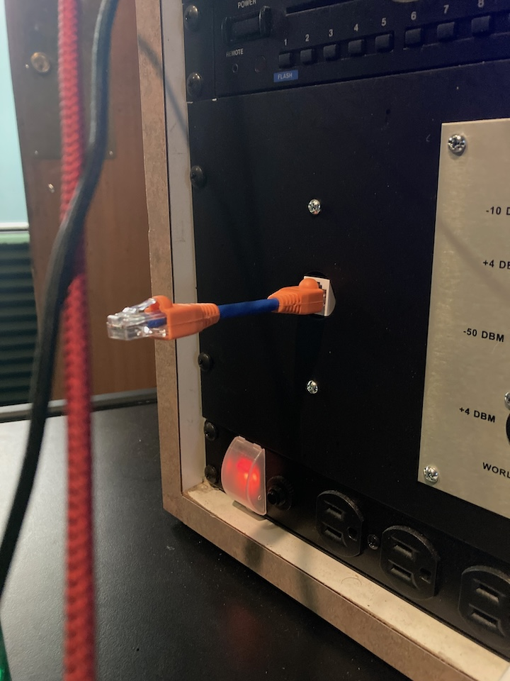
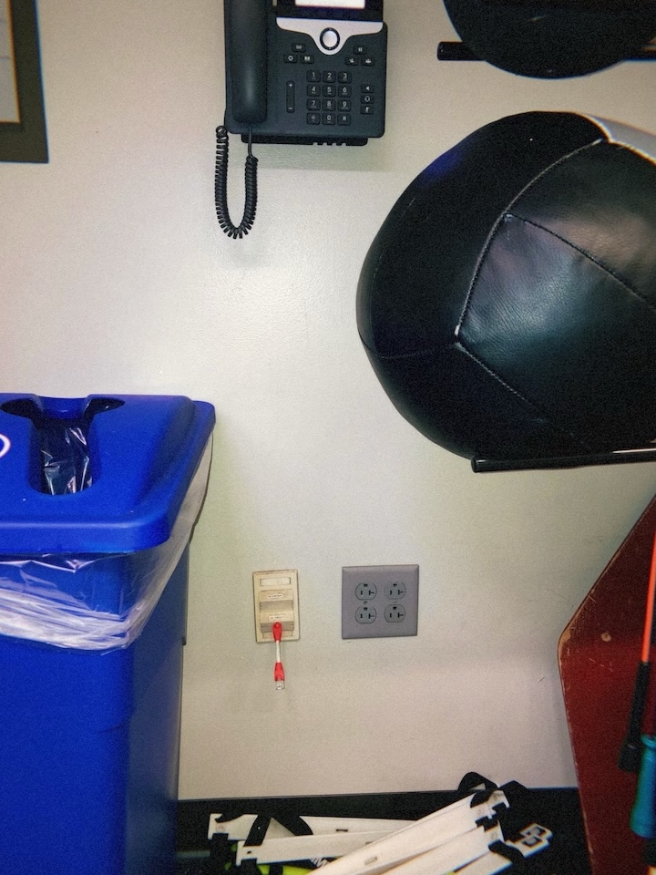

Petite UTP Convertible Ethernet Cables
Extremely small and functional ethernet cables by Doug MacDowell artist
Year: 2024
Made with: CAT6 Ethernet cable and boot caps.
Description: Petite UTP Convertible Cables are a new type of Ethernet cable.
Most ethernet cables are long - petite UTP's are short. Who cares?
Shorter cable = Faster speeds.
Petite UTP cables are fully functional and you can do whatever you like with them.
I like to place them in vacant ethernet ports.
 


